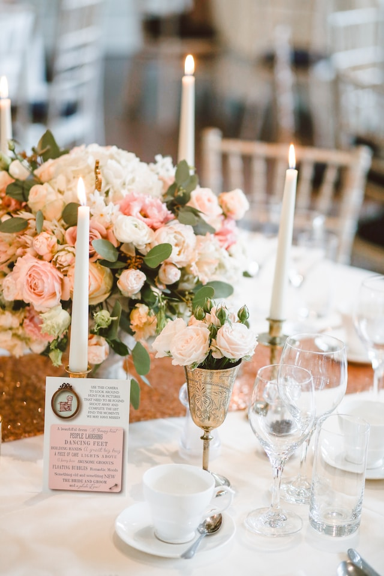

SELECT YOUR SERVICES
Partial planning
This service is typically offered for clients who have already started the planning process but need assistance with specific aspects, such as vendor selection or event coordination.

Full-service planning
This service includes everything from start to finish, including budget management, vendor selection, venue selection, decor design, event management, and more.

Day-of coordination
This service is for clients who have planned their wedding but need a professional to oversee the event on the actual day.
Venue selection
This service involves assisting clients with finding the perfect venue for their wedding, including conducting site visits, negotiating contracts, and managing logistics.

Budget management
This service includes creating a budget, tracking expenses, and negotiating with vendors to ensure that the couple stays within their budget.

Vendor selection
This service involves helping clients find the right vendors for their wedding, such as caterers, photographers, florists, and more.
Design and decor
This service includes creating a cohesive look and feel for the wedding, including designing invitations, selecting linens, creating centerpieces, and more.

Destination wedding planning
This service involves planning weddings in a location other than the couple's hometown, including managing travel arrangements and coordinating with local vendors.
Post-wedding brunch planning
This service involves planning and coordinating a post-wedding brunch or other event for guests the day after the wedding.